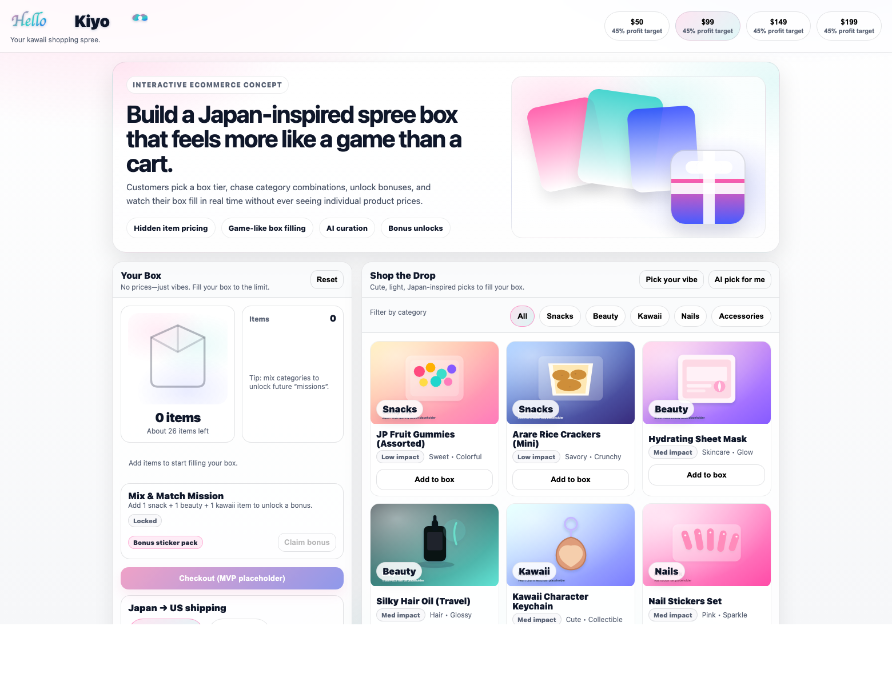
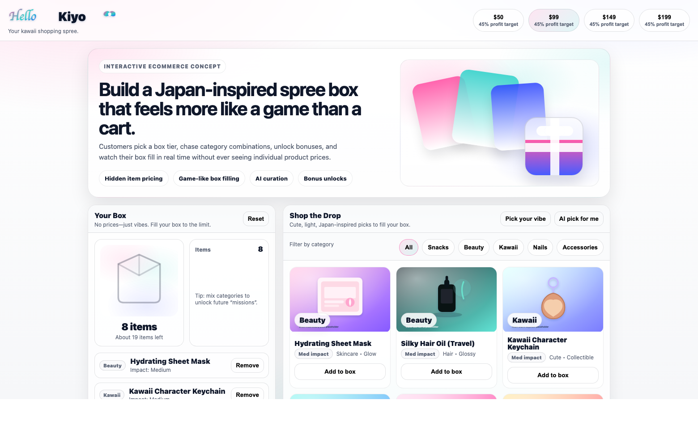

This document explains the business in plain English so it is easy to understand. The goal is to show what HelloKiyo is, how it makes money, why shoppers may love it, and what it needs in order to grow.
HelloKiyo is a brand that sells fixed-price boxes filled with Japanese snacks, beauty products, nails, accessories, and other cute items. The customer does not shop by comparing individual prices. Instead, she chooses a box size, fills it with items she likes, and watches the box fill up visually.
This matters because normal ecommerce feels practical, but HelloKiyo is supposed to feel fun, exciting, and shareable. It should feel more like a shopping game or a “treat yourself” moment than a normal checkout flow.

Most stores ask the customer to do work: search, compare prices, think about shipping, and build a cart. HelloKiyo turns that into a playful experience.
The first target customer is a girl or young woman who likes cute design, Japanese culture, snacks, beauty, nails, accessories, and “haul” or “unboxing” style content online.
She is not only buying products. She is buying a feeling: “I made this,” “this is cute,” “this feels like a shopping spree,” and “I want to show this to my friends.”
Good ecommerce usually solves a practical problem. Great brands also create excitement. HelloKiyo can stand out because it mixes shopping, surprise, curation, and social-friendly presentation.
If the experience is strong enough, the customer may come back not only for products, but for the fun of building the next box.
The business sells a fixed-price box. Inside the company, there is a cost ceiling that decides how much product cost and shipping cost can fit inside that box while still protecting profit.
| Time | Main focus |
|---|---|
| 0-30 days | Finish storefront, test first orders, collect feedback from friends and early customers. |
| 30-90 days | Launch paid boxes, improve repeat purchase rate, refine product mix, improve content. |
| 3-6 months | Make sourcing and fulfillment smoother, improve analytics, add more refined missions and curation. |
| 6-12 months | Scale content, expand product range, and pursue sponsorships or creator partnerships. |
Kiyo is part of the brand story, which is powerful. The marketing engine should start with short-form content: unboxings, “fill a box with me,” favorite products, challenge videos, and themed drops.
This helps in three ways:
Shopify handles orders and payments. A simple ops layer tracks what went in each box, what it actually cost, and how the order moves from review to packing to shipping.
Early on, this can be simple. Over time, it should become more automated so the business can grow without becoming messy.

HelloKiyo can become more than ecommerce if it succeeds in three connected areas:
That matters because it creates multiple value engines instead of just “sell item, ship item, repeat.”
| Category | Why it matters |
|---|---|
| Inventory | Lets the business stock attractive starter products and ship faster. |
| Packaging | Makes the unboxing experience feel premium and worth sharing online. |
| Store and ops | Improves order tracking, analytics, checkout flow, and fulfillment. |
| Content and testing | Helps prove what content converts and what product mix performs best. |
| Risk | Plan |
|---|---|
| Supplier prices change | Use conservative estimates and update the box math often. |
| Shipping costs move around | Default to economical shipping and keep a margin buffer. |
| Products go out of stock | Use substitution rules and maintain backups by category. |
| Shoppers get confused | Keep the interface visual, simple, and fun. |
| Growth is slower than expected | Start lean, test content quickly, and improve conversion before spending big on ads. |
HelloKiyo has a strong beginner story: make shopping feel exciting, make the box experience easy to understand, keep the profit math disciplined, and build a brand that can grow through content.
If the team proves that customers enjoy the experience and the business can ship profitably, HelloKiyo can grow from a fun box concept into a real ecommerce and creator-led brand.